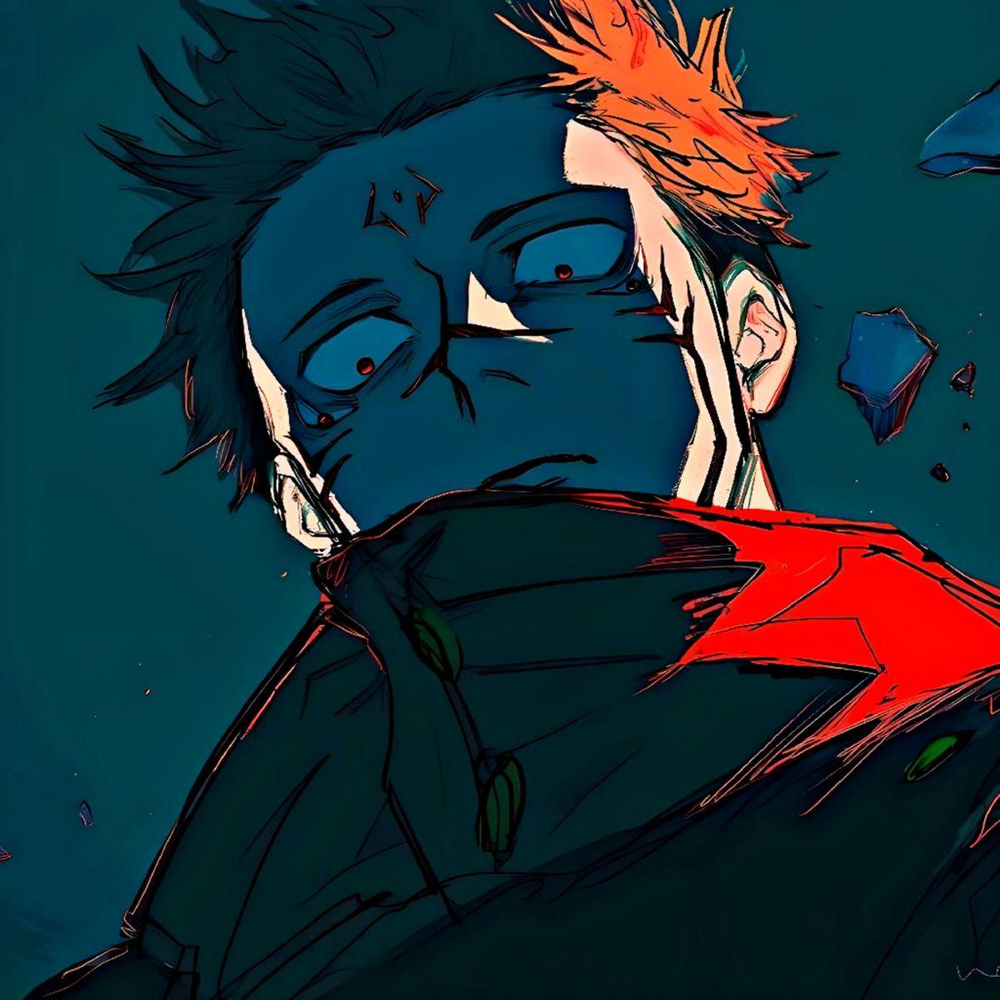

Ryomen Sukuna
September 31,2024 by Jahi Bennett
In this blog, The topic of Ryomen Sukuna has to be spoken about. Ryomen Sukuna is a character made by Gege Akutami in the series known as "Jujutsu Kaisen" poses as the main anatagonist. Sukuna is a character that lives for himself and his won enjoyment while not caring about the consequences or how it affects anyone else in the process. He is one of those characters that you just love and appreciate due to his non-chalant to the world and how no matter the words from other people still lives by his own right and ideology.
Sukuna is a heavily favoured character as he has quite a few iconic or downright amazing fight sequences in the series. One such sequence is the fight between Sukuna and another favoured character known as Gojo Satoru (another favorite character of mine). This fight last 36 chapters of this series ending in the victor being Ryomen Sukuna heavily because of plot due to many inferences Gojo should have won. After this fight, Sukuna ran the gauntlet with the rest of the cast which ended in his life and ideology being proven wrong by the main protagonist Yuji Itadori.